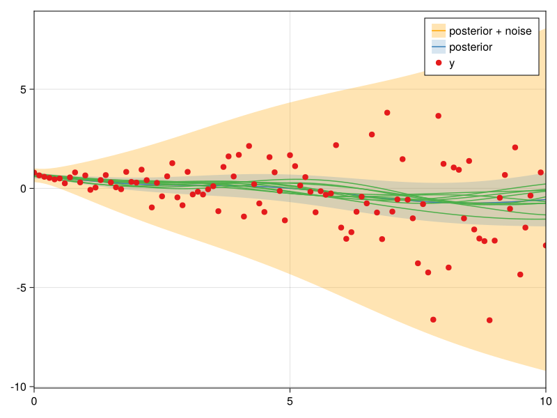

Parametric Heteroscedastic Model

You are seeing the HTML output generated by Documenter.jl and Literate.jl from the Julia source file. The corresponding notebook can be viewed in nbviewer.
This example is a small extension of the standard GP regression problem, in which the observation noise variance is a function of the input. It is assumed to be a simple quadratic form, with a single unknown scaling parameter, in addition to the usual lengthscale and variance parameters of the GP. A point estimate of all parameters is obtained using type-II maximum likelihood, as per usual.
using AbstractGPs
using AbstractGPsMakie
using CairoMakie
using KernelFunctions
using Optim
using ParameterHandling
using Zygote
using LinearAlgebra
using Random
Random.seed!(42) # setting the seed for reproducibility of this notebookIn this example we work with a simple GP with a Gaussian kernel and heteroscedastic observation variance.
observation_variance(θ, x::AbstractVector{<:Real}) = Diagonal(0.01 .+ θ.σ² .* x .^ 2)
function build_gpx(θ, x::AbstractVector{<:Real})
Σ = observation_variance(θ, x)
return GP(0, θ.s * with_lengthscale(SEKernel(), θ.l))(x, Σ)
end;We specify the following hyperparameters:
const flat_θ, unflatten = ParameterHandling.value_flatten((
s=positive(1.0), l=positive(3.0), σ²=positive(0.1)
));
θ = unflatten(flat_θ);We generate some observations:
const x = 0.0:0.1:10.0
const y = rand(build_gpx(θ, x));We specify the objective function:
function objective(flat_θ)
θ = unflatten(flat_θ)
fx = build_gpx(θ, x)
return -logpdf(fx, y)
end;We use L-BFGS for optimising the objective function. It is a first-order method and hence requires computing the gradient of the objective function. We do not derive and implement the gradient function manually here but instead use reverse-mode automatic differentiation with Zygote. When computing gradients with Zygote, the objective function is evaluated as well. We can exploit this and avoid re-evaluating the objective function in such cases.
function objective_and_gradient(F, G, flat_θ)
if G !== nothing
val_grad = Zygote.withgradient(objective, flat_θ)
copyto!(G, only(val_grad.grad))
if F !== nothing
return val_grad.val
end
end
if F !== nothing
return objective(flat_θ)
end
return nothing
end;We optimise the hyperparameters using initializations close to the values that the observations were generated with.
flat_θ_init = flat_θ + 0.01 * randn(length(flat_θ))
result = optimize(
Optim.only_fg!(objective_and_gradient),
flat_θ_init,
LBFGS(;
alphaguess=Optim.LineSearches.InitialStatic(; scaled=true),
linesearch=Optim.LineSearches.BackTracking(),
),
Optim.Options(; show_every=100),
) * Status: success
* Candidate solution
Final objective value: 1.576205e+02
* Found with
Algorithm: L-BFGS
* Convergence measures
|x - x'| = 3.97e-08 ≰ 0.0e+00
|x - x'|/|x'| = 1.58e-08 ≰ 0.0e+00
|f(x) - f(x')| = 0.00e+00 ≤ 0.0e+00
|f(x) - f(x')|/|f(x')| = 0.00e+00 ≤ 0.0e+00
|g(x)| = 6.34e-09 ≤ 1.0e-08
* Work counters
Seconds run: 1 (vs limit Inf)
Iterations: 10
f(x) calls: 13
∇f(x) calls: 11
The optimal model parameters are:
θ_final = unflatten(result.minimizer)(s = 0.385143986830958, l = 2.3342748073768, σ² = 0.08082582089918736)We compute the posterior GP with these optimal model parameters:
fx_final = build_gpx(θ_final, x)
f_post = posterior(fx_final, y);We visualize the results with AbstractGPsMakie:
using CairoMakie.Makie.ColorSchemes: Set1_4
with_theme(
Theme(;
palette=(color=Set1_4,),
patchcolor=(Set1_4[2], 0.2),
Axis=(limits=((0, 10), nothing),),
),
) do
plot(
x,
f_post(x, observation_variance(θ_final, x));
bandscale=3,
label="posterior + noise",
color=(:orange, 0.3),
)
plot!(x, f_post; bandscale=3, label="posterior")
gpsample!(x, f_post; samples=10, color=Set1_4[3])
scatter!(x, y; label="y")
axislegend()
current_figure()
end
Package and system information
Package information (click to expand)
Status `~/work/AbstractGPs.jl/AbstractGPs.jl/examples/3-parametric-heteroscedastic/Project.toml` [99985d1d] AbstractGPs v0.5.21 `/home/runner/work/AbstractGPs.jl/AbstractGPs.jl#master` [7834405d] AbstractGPsMakie v0.2.6 ⌃ [13f3f980] CairoMakie v0.10.12 [ec8451be] KernelFunctions v0.10.63 [98b081ad] Literate v2.16.1 [429524aa] Optim v1.9.2 [2412ca09] ParameterHandling v0.5.0 [e88e6eb3] Zygote v0.6.69 [37e2e46d] LinearAlgebra [9a3f8284] Random Info Packages marked with ⌃ have new versions available and may be upgradable.To reproduce this notebook's package environment, you can download the full Manifest.toml.
System information (click to expand)
Julia Version 1.10.2 Commit bd47eca2c8a (2024-03-01 10:14 UTC) Build Info: Official https://julialang.org/ release Platform Info: OS: Linux (x86_64-linux-gnu) CPU: 4 × AMD EPYC 7763 64-Core Processor WORD_SIZE: 64 LIBM: libopenlibm LLVM: libLLVM-15.0.7 (ORCJIT, znver3) Threads: 1 default, 0 interactive, 1 GC (on 4 virtual cores) Environment: JULIA_DEBUG = Documenter JULIA_LOAD_PATH = :/home/runner/.julia/packages/JuliaGPsDocs/7M86H/src
This page was generated using Literate.jl.